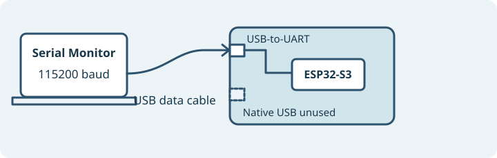

1. Define the test before building
Target the ESP32-S3-DevKitC-1 and identify the revision on the actual board. The starter’s expected output is a repeated line about once a second, with output resuming after Reset.
Danish Iman’s project cards use a photo and a concise description of the result. ESP Labs adds board-specific prerequisites, steps, and code. Apply both ideas when publishing a VIO build. ESP32 Lab portfolio · ESP Labs
2. Collect parts, versions, and costs
Use one matching dev board, one USB data cable, Arduino IDE with the ESP32 board support package, and a serial monitor. Record the board revision, package version, OS, port, and settings in the test record. The starter uses the on-board USB-to-UART bridge and no jumpers.
With sample inputs, a $12 board and a $4 data cable total $16 before shipping and tax. Record actual receipts for the build. Espressif DevKitC-1 guide
3. Build and make one measurement

- Connect the USB-to-UART port shown in the matching board documentation. Select the board and port in Arduino IDE.
- Disable USB CDC On Boot for this UART procedure, upload the sketch, and open Serial Monitor at 115200 baud.
- Capture a short log and time several consecutive intervals. Disconnect and reconnect the cable, then repeat after pressing Reset.
Example mean period = (time of sixth line − time of first line) ÷ 5. If the timestamps are 0.10 and 5.15 seconds, the mean is 1.01 seconds. Record observed data with the board and reader versions.
4. Diagnose before adding features
A user report on Espressif’s tracker describes intermittent output with USB CDC. Record which physical connector and USB mode were used before comparing results. If the baseline fails, change one variable at a time, such as the cable, port, board selection, or serial configuration. Capture what changed.
5. Maintain and upgrade the build
Keep the working sketch and toolchain version, test log, part identifiers, and a small annotated diagram. Change one component or software version at a time. Rerun the baseline and test the new behavior. Keep the previous build available for recovery and record which board variants were actually tested.
6. Record the bench test
Use the same entries for the baseline and for each upgrade. Attach a short serial log to the record.
| Check | What to record |
|---|---|
| Setup | Test date, board revision, package version, connector, baud rate |
| Baseline | First and sixth timestamps, mean interval, visible output |
| Reset and reconnect | Whether output resumed after each action |
| Upgrade or fix | One change, observed difference, and the version available for rollback |
| Result | Pass, fail, or pending with the evidence location |